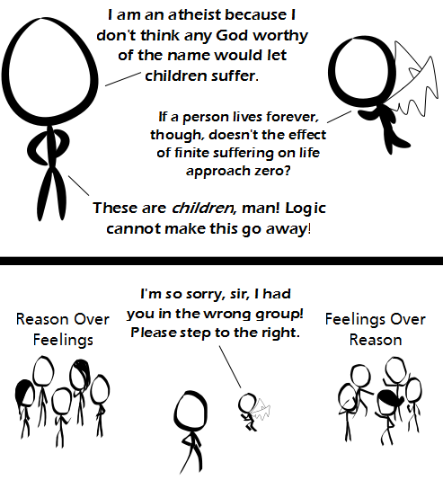

Comic JK 795
When I Feel Like It
⇤
<
?
>
⇥

⇤
<
?
>
⇥
Forum
.
RSS
.
Digg
.
Facebook
.
Reddit
.
Twitter
.
Stumbleupon
Enter your thoughts on number 795 here. Please, no spamming, trolling, phreaking, or giving the author shit. >shit not given What are you doing to stop children suffering? >I changed my Facebook profile picture. >>Not having children and humanely killing all the ones that seem to be suffering >>>Seems good to me! Seems a much more worthy crusade than most people nowadays. The good old "TotC" argument - works on everyone. Nice to see atheists and those who believe in god have something in common. >You could make a two axis plot of it: reason/feelings vs atheism/theism. It would be a lot like that diamond graph libertarians like. >>As Terry Pratchett writes, gods don't hate atheists; they even like them: Their belief in Gods' non-existence is just as good as the belief of theists. >>>diction fail. >>>It's hard to be an atheist when the gods come round in the evenings to heave bricks through your windows. >>>>if they were actually gods, they wouldn't have to *come around*, let alone actually *heave*... >>>>>Tell that to Thor. >I'm reminded of that Iain M. Banks novel, with the gas-giant Dwellers. They live for billions of years, and they spend the first few centuries of their lives being hunted for sport by their elders. >We should do that! >>We already do! >>>The Algebraeist? I love that book. Though the old man turning into a walrus bemused me. >>>>That's the one. I also just remembered the Dweller captain who kept a couple of Dweller fetuses as pets. But why can't a god unworthy the name exist? > Define "god" and "unworthy" first. If by "god" you mean an omnipotent omniscient creator, then because that's a fairy tale and makes no sense, regardless of how bloodthirsty you do or don't paint him/her/it/them. And if by "unworthy" you mean "failing to live up to my human expectations", aren't you classifying your moral judgement as better than god's? Either way (both ways), god's in trouble... >> I'll be happy with "god" meaning an enormously powerful sentient entity that wilfully brought about our existence, and "unworthy" to mean that it doesn't match our expectations, sure. Why shouldn't such an entity be possible? Should have ready those terms of use before you agreed to it, eh? >No-one has time to read all that boring legalese about who begat whom. Finite suffering x theoretically infinite lives = infinite suffering >That would be reincarnation - a good summary of why people who believe in reincarnation don't want infinite lives. >>Which is why mostly we prefer the afterlife theory, where we get 1 life and then an existence of pure happiness. >>>I think you should take a look at the population of respective religions on a global scale before making such bold sweeping statements. >>>>Monotheistic and atheistic religions have greater populations than polytheistic religions at the current time. >>>>>Atheistic religion? How does that work? >>>>>>A belief system that doesn't involve a god. Maybe Buddhism? >>>>>>>why couldn't we take the cat approach of nine lives and the sum of all of them determines your final afterlife. Just in case you ended up in a really really screwed up body that had a genetic predisposition to anger. Amazi-stick-figure is immune to logic! >DERP